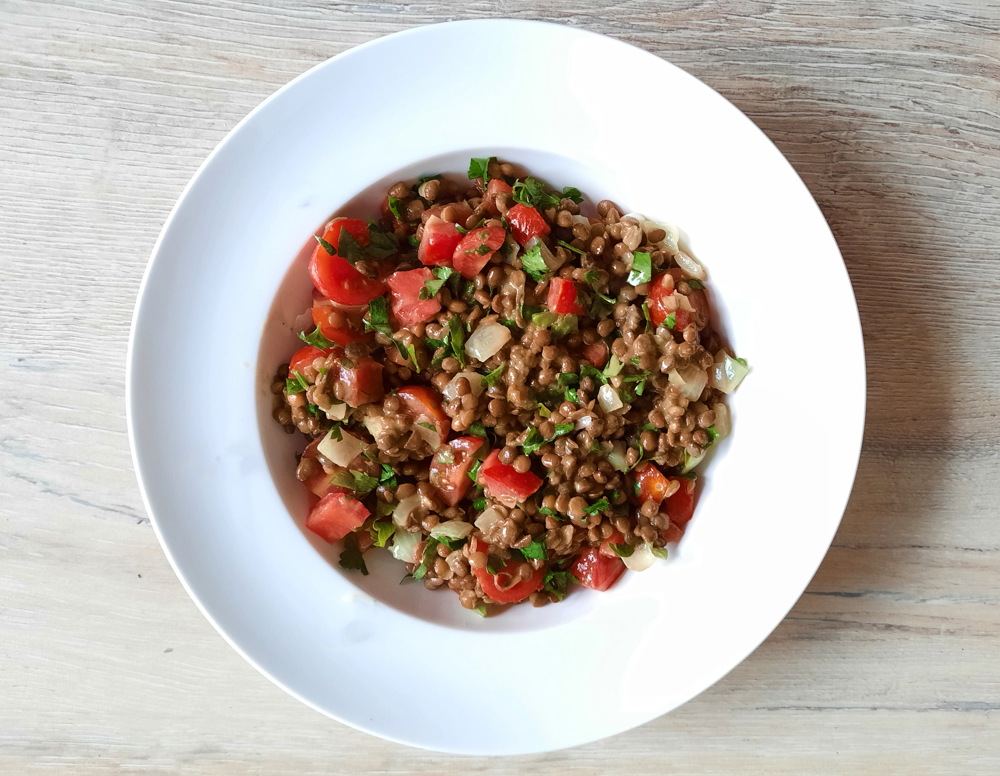

biet wellington

snelle bami met bladselderij
avocado salade

amerikaanse caesar salade

italiaanse caponata

zomerse linzensalade

Bereidingsduur: 25 minuten
Aantal personen: 2
Ingrediënten:
400 gram linzen
1 ui
2 bosjes bladselderij
2 eetlepels mosterd
1 eetlepel citroensap
200 gram cherrytomaatjes
2 eetlepels witte wijnazijn
3 eetlepels olijfolie
400 gram linzen
1 ui
2 bosjes bladselderij
2 eetlepels mosterd
1 eetlepel citroensap
200 gram cherrytomaatjes
2 eetlepels witte wijnazijn
3 eetlepels olijfolie
Instructies:
1. Verwarm de linzen totdat deze warm zijn. Snijd ondertussen de ui en cherrytomaten in kleine stukjes. Haal de steeltjes van de selderij en snijd de blaadjes in kleine stukjes.
2. Bak de uien in een andere pan en voeg toe aan de linzen. Meng de mosterd met het citroensap, witte wijnazijn en olijfolie. Voeg deze dressing samen met de cherrytomaten en bladselderij toe aan de linzen. Breng op smaak met eventueel peper en zout.
1. Verwarm de linzen totdat deze warm zijn. Snijd ondertussen de ui en cherrytomaten in kleine stukjes. Haal de steeltjes van de selderij en snijd de blaadjes in kleine stukjes.
2. Bak de uien in een andere pan en voeg toe aan de linzen. Meng de mosterd met het citroensap, witte wijnazijn en olijfolie. Voeg deze dressing samen met de cherrytomaten en bladselderij toe aan de linzen. Breng op smaak met eventueel peper en zout.